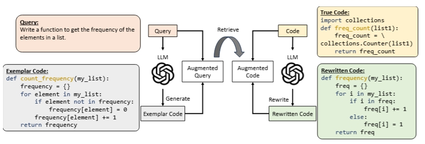
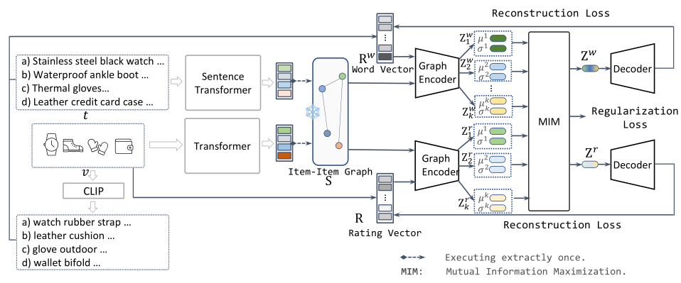
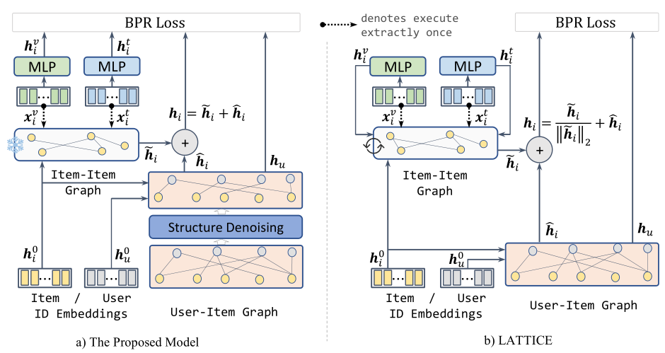
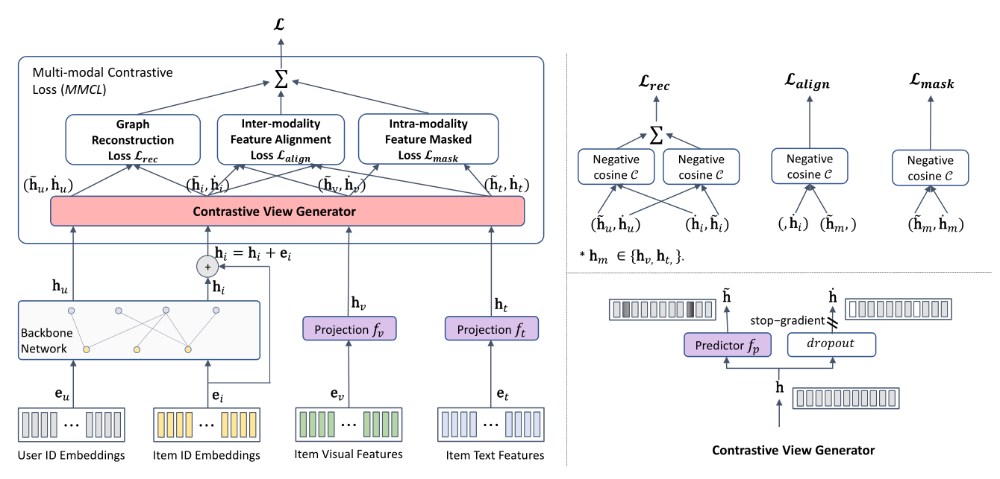
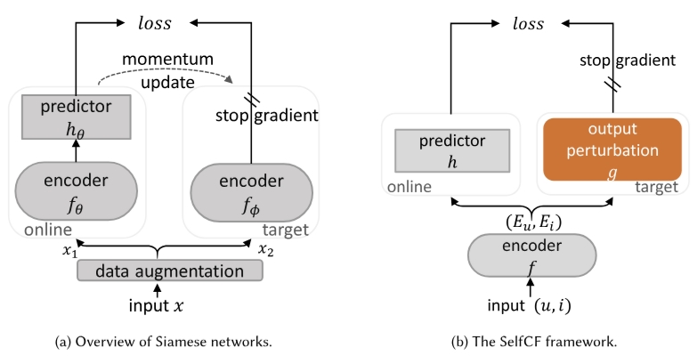

I am a Senior Researcher from College of Computing and Data Science at Nanyang Technological University. I obtained my Ph.D from Kyoto University under the supervision of Prof. Toru Ishida. My current research focus is at the intersection of graph learning, recommender systems, and multimodal learning.
- 07/2024 Our paper on 'MOOC Learning Analysis' was accepted by Interactive Learning Environments.
- 07/2024 Tutorial tallk on 'Multimodal LLM and its Application to Recsys' at the ICCSE2024 Conference.
- 07/2024 Our paper on 'Food Recommendation' was accepted by CIKM2024. Congrats to Yixin!
- 07/2024 Our paper on 'Multimodal Sequential Recommendation' was accepted by ACM Transactions on Recommender Systems. Congrats to Lingzi!
- 06/2024 Our paper on 'Disease Prediction' was accepted by Methods. Congrats to Ruomei! [Elsevier]
- 05/2024 One paper was accepted by ACL(Oral). Congrats to Haochen! [arXiv]
- 04/2024 One paper was accepted by TNNLS. Congrats to Honglei!.
- 03/2024 One resource paper was accepted by WWW 2024. Congrats to Lingzi & Yinan!
- 02/2024 One paper was accepted by IEEE Transactions on Multimedia. [arXiv]
- ...
-
Rewriting the Code: A Simple Method for Large Language Model Augmented Code SearchHaochen Li, Xin Zhou, Zhiqi ShenACL-Oral 2024
-
Disentangled Graph Variational Auto-Encoder for Multimodal Recommendation with InterpretabilityXin Zhou, Chunyan MiaoIEEE TMM (2024)
-
A Tale of Two Graphs: Freezing and Denoising Graph Structures for Multimodal RecommendationXin Zhou, Zhiqi ShenACM Multimedia (MM) 2023 [1st Most Cited Research Paper]
-
Bootstrap Latent Representations for Multi-modal RecommendationXin Zhou, Hongyu Zhou, Yong Liu, Zhiwei Zeng, Chunyan Miao, Pengwei Wang, Yuan You, Feijun JiangWWW 2023 [2nd Most Cited Research Paper]
-
SelfCF: A Simple Framework for Self-supervised Collaborative FilteringXin Zhou, Aixin Sun, Yong Liu, Jie Zhang, Chunyan MiaoACM Transactions on Recommender Systems (TORS) [Featured Article of TORS'2023]
Conference PC Member or Reviewer
Invited Journal Reviewer
- AAAI2025, PRICAI2024, RecSys2024, MM2024, WWW2024, AAAI2024, AAAI2023, WWW2023, ECAI2023, PRICAI2023, IJCAI2023(Demo Track), CIKM2023(Resource Track), IJCAI2020(Demo Track), CIKM2019
Invited Journal Reviewer
- ACM Transactions on Intelligent Systems and Technology (TIST)
- ACM Transactions on Recommender Systems (TORS)
- IEEE Transactions on Pattern Analysis and Machine Intelligence (TPAMI)
- ACM Transactions on Information Systems (TOIS)
- IEEE Transactions on Knowledge and Data Engineering (TKDE)
- IEEE Transactions on Services Computing (TSC)
- IEEE/ACM Transactions on Networking (TON)
- IEEE Transactions on Learning Technologies (TLT)
- IEEE Transactions on Network Science and Engineering (TNSE)
- Frontiers of Computer Science (FCS)
- Outstanding Service Award (ICCSE2023). 2023
- Best Student Paper Award (IEEE ICA). 2021
- Telecommunication Advancement Foundation Travel Award (IEEE SCC). 2016
- Japanese Government (MEXT) Scholarship (Kyoto University). 2012 - 2016
- Outstanding Demo Award (IEEE MASS). 2009
- National Fellowship (2/313). 2008
- Deadlines: CCF Deadlines
- AI Deadlines: AI Conference Deadlines
- CCF List: ccf.atom.im
- CSRankings: Computer Science Rankings
- Core Ranking: Conference Portal